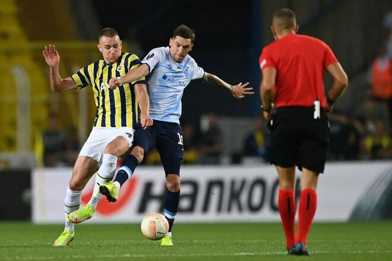

Таблиця коефіцієнтів УЄФА. Окрім перемоги Шахтаря, нічого втішного немає
«Шахтар» здобув перемогу, а «Динамо» та «Дніпро-1» у мід-вік очок не набрали.
Три українські команди зіграли матчі 1-го туру єврокубків у мід-вік, і в таблиці коефіцієнтів УЄФА відбулися деякі зміни.
У вівторок, 6 вересня, «Шахтар» у Лізі чемпіонів завдав поразки німецькому «РБ Лейпциг» (4:1), і це єдина світла пляма цього тижня.
А от у четвер, 8 вересня, два українські клуби зіграли невдало. На старті Ліги Європи столичне «Динамо» на виїзді поступилося турецькому «Фенербахче» (1:2), пропустивши вирішальний гол у компенсований час. А «Дніпро-1» зазнав поразки від нідерландського АЗ Алкмаар (0:1) у Лізі конференцій.
Таким чином, Україна додала до рейтингу 0.400 балів за рахунок успіху «гірників» (2 очки за перемогу, поділені на 5 клубів). Сезонний набір становить 2.300 , і це лише 34-те місце у поточній єврокампанії.
Якщо вивчати 5-річний рейтинг, який набуде завершеного вигляду наступної весни, то Україна залишається на 14-му місці (26.100 бала), не зумівши дістати цього тижня дискваліфіковану рф. Це питання відкладено до наступного туру: будь-яке набране очко означатиме підйом на одну позицію.
Щодо конкурентів, то цікаво, що Бельгія наздогнала Австрію у боротьбі за 9-ту позицію. Набір за тиждень у сусідів поза топ-10 становив:
- Сербія: +0.250 (два клуби у грі)
- Норвегія: +0.500 (два клуби)
- Чехія: +0.500 (три клуби)
- Швейцарія: +0.500 (два клуби)
І якщо Сербія попереду на пристойній дистанції, то з трьома рештою федерацій цілком можна боротися, оскільки всі знаходяться в інтервалі одного бала.